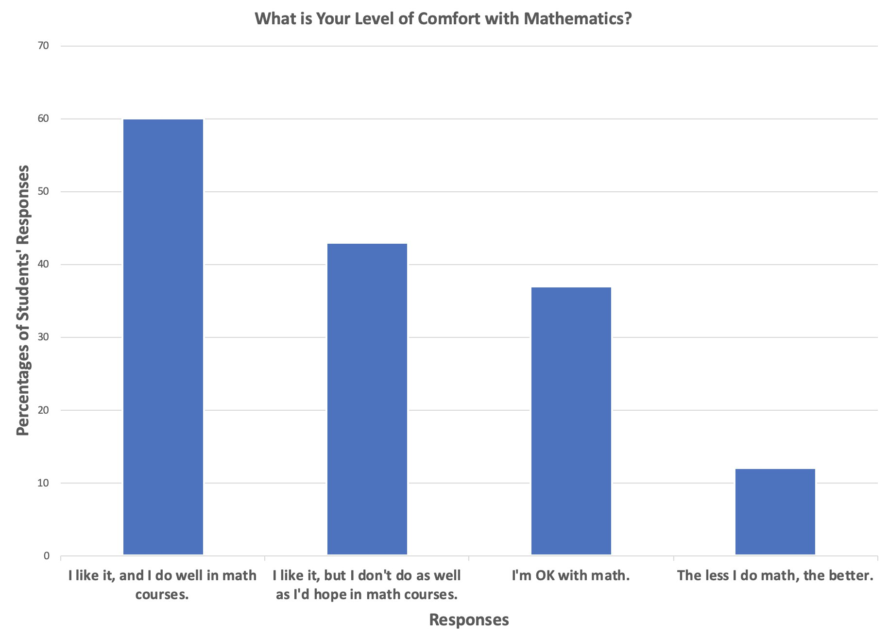
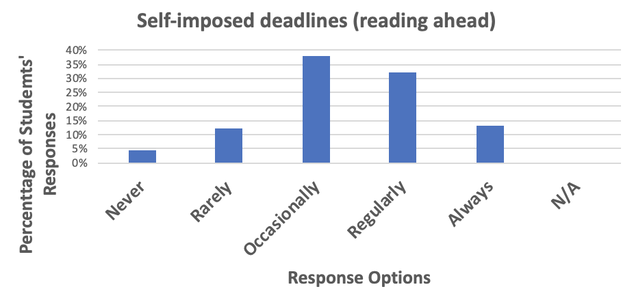
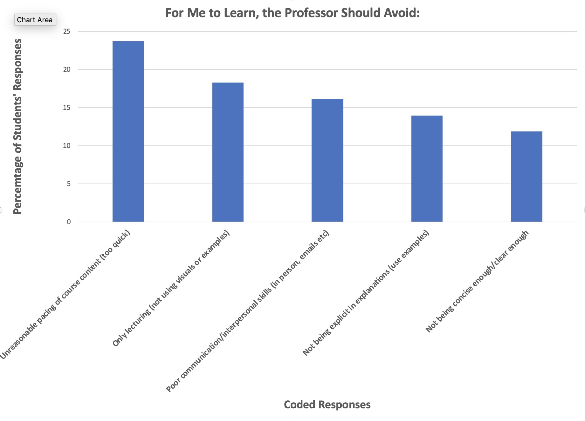

FCS Teaching Topics: Giving Better Feedback Directly on Students' Project Work to Reduce Your Workload
Recommendations.
Not everything on an assignment must have written feedback. Choose the most important points that will make a significant improvement in overall attainment and provide feedback on that.
Be specific with feedback, it must be accurate and valid to the task.
What Student Finds Disengaging:.
1. High paced lectures (racing through content)
2. Lecture only classes (no visuals or examples)
Students Reported Their Favourite Learning Methods Are:.
- Trial and error
- Analysis
- Videos and content on Brightspace
Information About the Survey
The survey was given to first year students taking Dr. Christian Blouin's course, CSCI 1120.
All responses were gathered BEFORE the students received any instruction in the course.
The purpose of the survey was to garner information from students as to what they
perceive to be the most effective strategies, in and out of the classroom, that improve their learning.
Question 1
The top three ways that students reported as their best learning methods:
- Trial and error: making mistakes, and deducing how things work
- Analyzing how something works to develop an understanding
- Watching videos

Question 2
Students reported the following about their comfort level with Math:
60% like Math and do well
43% like Math but aren't happy with their attainment
37% are OK with Math
12% would rather do less Math

Question 3
This question was set up in three parts. It focused on students' readiness for different types of deadlines and keeping up with work.
3a) The top 3 results about students' readiness for examinations and tests:
48% Regularly
40% Always
7% Occasionally

3b) The top 3 results about students' readiness for graded assignments:
46% Regularly
36% Always
16% Occasionally

3c) The top 3 results about students' readiness for self-imposed deadlines:
38% Regularly
32% Always
13% Occasionally

Question 4
For optimal learning, students reported that professors should incorporate the following in instruction:
52% Explicit problem examples with context (explain step by step)
26% Formative Assessments ie. quizzes, practive problems, past papers
23% Use Brightspace - to access to course content and recorded lectures
15% Be more engaging in lessons (passions for subject, be positive, use humour)
13% Lesson delivery and pace - speak in a clear, slow manner
Question 5
To improve learning, students reported professors should avoid:
24% Unreasonable pace of course content
18% Only lecturing
16% Poor communication or interpersonal skills
14% Not using enough examples in explanations
12% Not being concise or clear enough

Would you like to know more?
Drop by for a chat at The Academic Loop 239
Cell Number: 902-225-8453
Email: sbernier@dal.ca
I'm looking forward to working with you - Stephanie Bernier